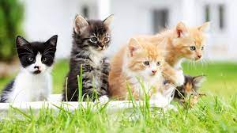

Cuando adoptas a un animal de Fundación, estás dejando espacio para que demos la oportunidad a otras mascotas de ser rescatadas, cuidadas y protegidas. No es cierto que los animales adultos no sean capaces de aprender y adaptarse a un nuevo hogar. Los animales abandonados han pasado por situaciones muy malas, al adoptarlos les das el cariño que nunca han tenido. Una mascota rescatada te dará amor incondicional, compañía permanente, alegría en todo momento, fidelidad absoluta y un eterno agradecimiento. Los animales no son productos ni juguetes y con tantos que necesitan un hogar en Chile, ¡qué mejor que salvar uno! Te aseguramos que es la experiencia más gratificante de la vida.
|  | Gatitos | |
Perritos |